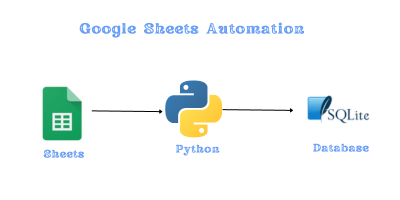

Mastering Data Flow: Google Sheets to SQLite via Python#
Google Sheets, while being an exceptional tool for the non-tech savvy, isn’t particularly efficient for complex querying. In this guide, I’ll demonstrate how just a few lines of Python can harness your Google Sheet as a valuable input for your SQL database. The beauty of this approach is its adaptability; whether it’s SQLite, PostgreSQL, MongoDB, or any other database you prefer, you can seamlessly transform and integrate your Google Sheet data with ease.

Here, we’ll bridge the worlds of Google Sheets, Pandas, and SQLite to create a seamless data pipeline. Before we dive in, let’s understand the tools in our toolkit and the magic behind our data extraction function:
pandas (imported as pd): Our data manipulation champion! With pd, we can reshape, analyze, and transform our tabular data with ease.json: It’s how we’ll talk to Google Sheets. Most authentication credentials for Sheets come in JSON format, and this module helps us handle that.oauth2client & gspread: Our gateways to Google Sheets. The former authenticates us, and the latter lets us read, write, and navigate our sheets like a pro.sqlite3: Where our processed data finds a home! SQLite offers a lightweight database solution, perfect for storing and querying our data.datetime & timedelta: Timekeepers of our script. From calculating durations to stamping records, these modules are essential for any time-related operations.
With our tools at the ready, let’s dive into creating a robust data flow, turning Google Sheets insights into actionable SQLite data!
import pandas as pd
import json
from oauth2client.service_account import ServiceAccountCredentials
import gspread
import sqlite3
from datetime import datetime, timedelta
Deep Dive: The Data Extraction Function#
get_user_information(sheet_name): This utility function serves as our bridge to Google Sheets. Before diving into its mechanics, it’s pivotal to have the creds.json file in place. To obtain this file, head to your Google Cloud Console, navigate to the ‘Credentials’ page within the APIs & Services section, and create a service account; once done, you can download its corresponding JSON key. Ensure your Google Sheet is shared with the service account email tied to your creds.json to facilitate seamless authentication and data retrieval. With these preparations, the function selects your desired worksheet, retrieves the data, and elegantly transforms it into a Pandas DataFrame, setting the stage for deeper data operations.
def get_user_information(sheet_name):
scope = ['https://spreadsheets.google.com/feeds','https://www.googleapis.com/auth/drive']
creds = ServiceAccountCredentials.from_json_keyfile_name('creds.json',scope)
client = gspread.authorize(creds)
industries = client.open("quizs").worksheet(sheet_name)
users = pd.DataFrame(industries.get_all_values())
return users
creds.json
{
"type": "service_account",
"project_id": "YOUR-PROJECT-ID",
"private_key_id": "YOUR-PRIVATE-KEY-ID",
"private_key": "YOUR-PRIVATE-KEY",
"client_email": "YOUR-SERVICE-ACCOUNT@appspot.gserviceaccount.com",
"client_id": "CLIENT-ID",
"auth_uri": "https://accounts.google.com/o/oauth2/auth",
"token_uri": "https://oauth2.googleapis.com/token",
"auth_provider_x509_cert_url": "https://www.googleapis.com/oauth2/v1/certs",
"client_x509_cert_url": "https://www.googleapis.com/robot/v1/metadata/x509/twittersheet-275317%40appspot.gserviceaccount.com"
}
Data Transformation Steps:#
Fetching Data: We retrieve data from the worksheet titled “questions” using our function.Cleaning and Formatting: The DataFrame’s first row becomes our column headers, which we then drop, ensuring a clean data structure.Timestamping: A new ‘question_created’ column gets added, marking each entry with the current date and time.Database Initialization: We prepare to inject our data into an SQLite database named ‘quiz.sqlite3’, ensuring our insights find a structured home.
With our toolkit and methods detailed, let’s dive deep, transforming Google Sheets’ insights into structured SQLite datasets. Let the data flow commence!
questions = get_user_information("questions")
questions = questions.rename(columns=questions.iloc[0]).drop(questions.index[0])
questions['question_created'] = datetime.now()
---------------------------------------------------------------------------
FileNotFoundError Traceback (most recent call last)
Cell In[3], line 1
----> 1 questions = get_user_information("questions")
2 questions = questions.rename(columns=questions.iloc[0]).drop(questions.index[0])
3 questions['question_created'] = datetime.now()
Cell In[2], line 4, in get_user_information(sheet_name)
1 def get_user_information(sheet_name):
2 scope = ['https://spreadsheets.google.com/feeds','https://www.googleapis.com/auth/drive']
----> 4 creds = ServiceAccountCredentials.from_json_keyfile_name('creds.json',scope)
6 client = gspread.authorize(creds)
8 industries = client.open("quizs").worksheet(sheet_name)
File C:\Python311\Lib\site-packages\oauth2client\service_account.py:219, in ServiceAccountCredentials.from_json_keyfile_name(cls, filename, scopes, token_uri, revoke_uri)
193 @classmethod
194 def from_json_keyfile_name(cls, filename, scopes='',
195 token_uri=None, revoke_uri=None):
197 """Factory constructor from JSON keyfile by name.
198
199 Args:
(...)
217 the keyfile.
218 """
--> 219 with open(filename, 'r') as file_obj:
220 client_credentials = json.load(file_obj)
221 return cls._from_parsed_json_keyfile(client_credentials, scopes,
222 token_uri=token_uri,
223 revoke_uri=revoke_uri)
FileNotFoundError: [Errno 2] No such file or directory: 'creds.json'
questions
| id | question_text | question_type | question_created | |
|---|---|---|---|---|
| 1 | 1 | Which of the following features distinguishes ... | lakehouse | 2023-08-26 09:32:30.461600 |
| 2 | 2 | Which of the following locations hosts the dri... | lakehouse | 2023-08-26 09:32:30.461600 |
| 3 | 3 | A data architect is designing a data model tha... | lakehouse | 2023-08-26 09:32:30.461600 |
| 4 | 4 | Which of the following describes a scenario in... | lakehouse | 2023-08-26 09:32:30.461600 |
| 5 | 5 | A data engineer has created a Delta table as p... | lakehouse | 2023-08-26 09:32:30.461600 |
| 6 | 6 | Two junior data engineers are authoring separa... | lakehouse | 2023-08-26 09:32:30.461600 |
db_path = 'quiz.sqlite3'
conn = sqlite3.connect(db_path)
db_path = ‘quiz.sqlite3’
conn = sqlite3.connect(db_path)
Conclusion#
The digital landscape offers a myriad of tools to harness and analyze data. In our journey, we’ve explored how the synergy between Google Sheets, Pandas, and SQLite provides a formidable arsenal for data enthusiasts and professionals alike. By crafting a seamless pipeline, we’ve unlocked the potential to transform simple spreadsheet records into structured database entries, ensuring scalability, ease of access, and advanced analytics. Whether you’re just starting out or are a seasoned data veteran, integrating these tools into your workflow can usher in a new era of efficiency and insights. As we always say in the data world, the right tools and the right processes make all the difference. Happy data wrangling!